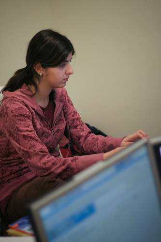
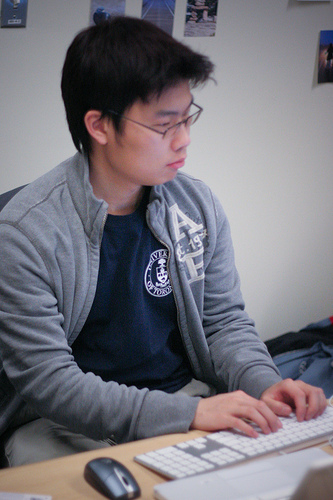
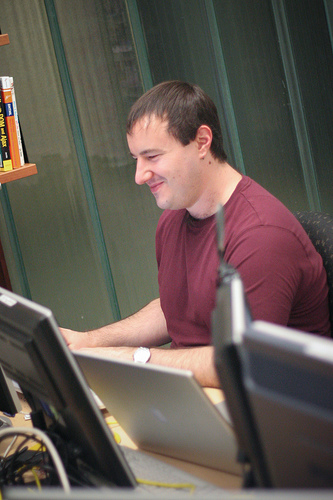
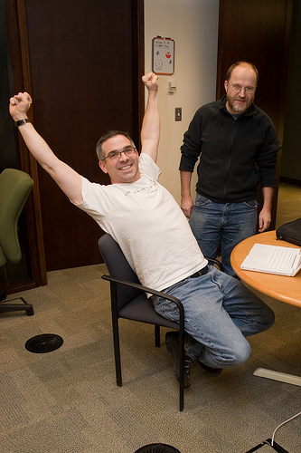
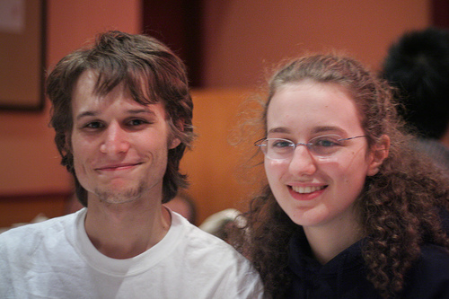
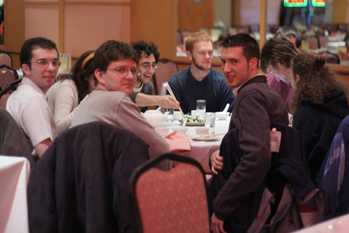
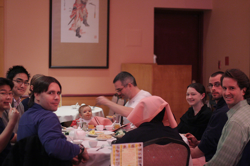

Code Sprint Day 1
It’s now 10:29 EST, and the room is fuller:
- Dave Wolever, Jeff Balogh, Dave Cooper, Luke Petrolekas, Blake Winton, and Adam Goucher are working on DrProject
- Martin Williams, Florian Shkurti, and Tony Yiu are working on OLM
- Yi Qing Sim is proofreading
- Pardis Beikzadeh is working on UTest
- David Chang is working on Flex (no sign of Ian "it's too eaaaarrrllly" Chan yet)
- Alan "Flaps" Rosenthal is doing tech support
- I'm fetching milk for coffee, and making sure the donuts get eaten
11:00: helps if all the tests are running before you start to merge.
11:50: DC has merged his RPC interface into trunk; all the tests that were passing before are still passing.
12:10: still no sign of Ian, but I just checked code into DrProject for the first time in more than a year.
14:15: Ian has showed up, Pardis has her VMs, Martin has a new Ubuntu, Blake has a password, Ian has showed up, and tickets are being closed. Opened, too, thanks to Adam and his new crew, but we will not speak of that yet…
16:30: winding down—the major tickets for OLM have been closed, a double handful for DrProject are gone as well (but Yi Qing, Luke, and Adam have found more), and we have a reservation for Chinese food at 6:00. It’s been fun; looking forward to tomorrow.
Quote of the day: wireless is the new peanuts.
Pictures thanks to Andrew Louis and David Wolever—thanks, guys.






